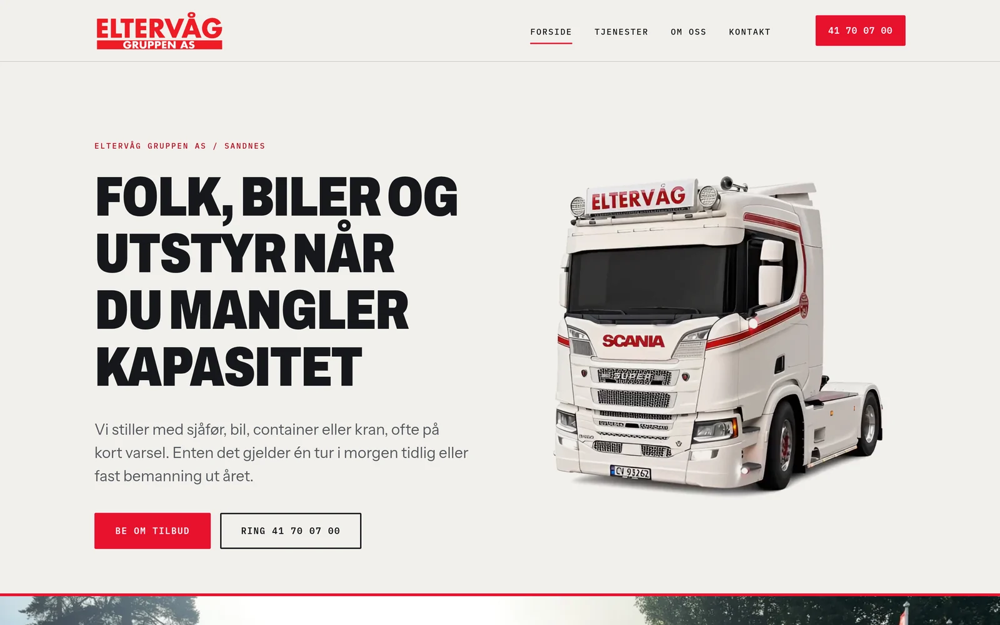
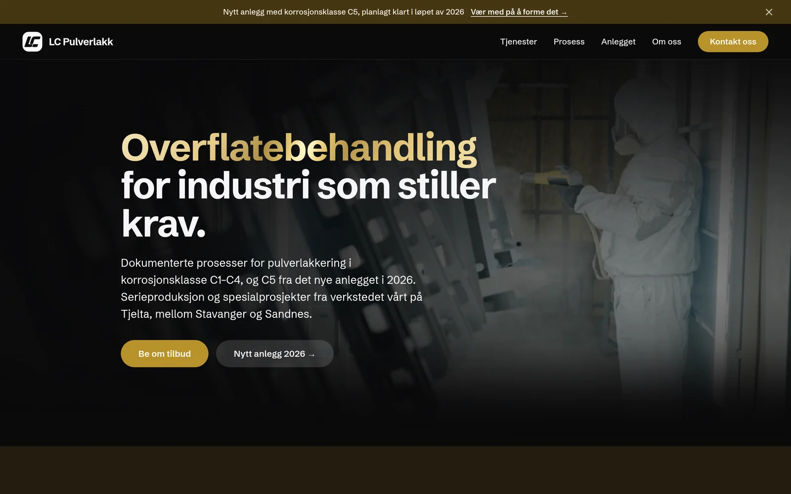
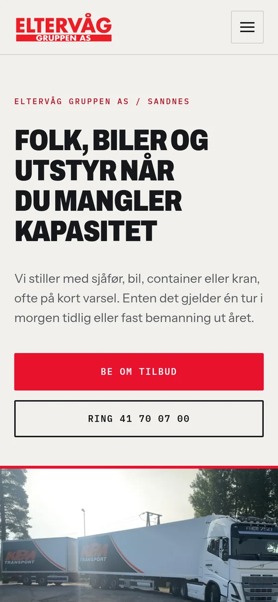
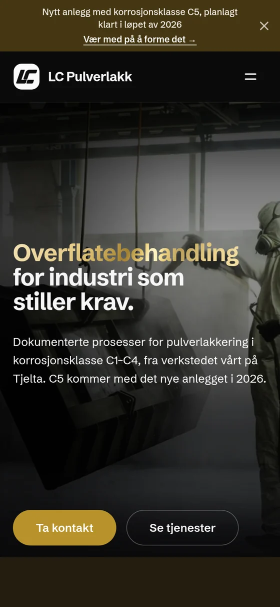

WebsitesNettsider
Two sites, both live, both linked. Open one.
To sider, begge i drift, begge lenket. Åpne en.
1 / 1

Eltervåg Gruppen Transport & staffing · Sandnes Transport og bemanning · Sandnes Read moreLes mer
LC Pulverlakk Surface treatment · Tjelta Overflatebehandling · Tjelta Read moreLes mer
Eltervåg Gruppen
Transport and staffing in Sandnes — a site that sells spare capacity, not a company brochure.
Transport og bemanning i Sandnes – en side som selger ledig kapasitet, ikke en bedriftsbrosjyre.
- Actions on the page
- Handlinger på siden
- 2
- Services offered
- Tjenester tilbudt
- 4
- Number, every width
- Nummer, alle bredder
- 1
- Studio
- Studio
- SoulScaler
- Sector
- Bransje
- Transport & staffing
- Transport og bemanning
- Based
- Sted
- Sandnes
- Status
- Status
- LiveI drift
The phone number is the call to action. A haulage job gets booked by phone, not through a contact form — so the number is a button in the menu bar rather than a line in the footer.
Nummeret er handlingen. Et transportoppdrag bestilles på telefon, ikke i et kontaktskjema – så nummeret er en knapp i menylinja, ikke en linje i bunnteksten.
The reasoningResonnementet
Eltervåg hires out drivers, vehicles, containers and cranes, often at short notice. The question a customer arrives with is never “who are you” — it is “can you be there tomorrow morning”. So the page is built around that one question, and the phone number sits in the menu bar at every screen width.
Eltervåg leier ut sjåfør, bil, container og kran, ofte på kort varsel. Spørsmålet kunden kommer med er aldri «hvem er dere» – det er «kan dere stille i morgen tidlig». Derfor er siden bygget rundt det ene spørsmålet, og telefonnummeret står i menylinja på hver eneste skjermbredde.

LC Pulverlakk
Powder coating for industry — where the documentation is the product.
Pulverlakkering for industri – der dokumentasjonen er selve varen.
- Corrosion classes today
- Korrosjonsklasser i dag
- C1–C4
- From the 2026 plant
- Fra anlegget i 2026
- C5
- Announcement bar
- Kunngjøring på toppen
- 1
- Studio
- Studio
- SoulScaler
- Sector
- Bransje
- Surface treatment
- Overflatebehandling
- Based
- Sted
- Tjelta, Rogaland
- Status
- Status
- LiveI drift
The technical detail is the headline. To a buyer, “corrosion class C5” is not small print — it is the criterion that decides whether they are allowed to use the supplier at all.
Den tekniske detaljen er overskriften. For en innkjøper er «korrosjonsklasse C5» ikke finstoff – det er kriteriet som avgjør om de kan bruke leverandøren i det hele tatt.
The reasoningResonnementet
A workshop at Tjelta, between Stavanger and Sandnes. Its customers are industrial buyers with requirements, and the corrosion class is the first thing they look for. So the page states it outright in the opening paragraph — C1–C4 today, C5 from the new plant in 2026 — instead of burying it in a datasheet three clicks down.
Et verksted på Tjelta, mellom Stavanger og Sandnes. Kundene er industri som stiller krav, og korrosjonsklassen er det første de leter etter. Derfor sier siden den rett ut allerede i ingressen – C1–C4 i dag, C5 fra det nye anlegget i 2026 – i stedet for å gjemme den i et datablad tre klikk ned.
SoftwareProgramvare
Tools, a game world, an app. Open one for the evidence.
Verktøy, en spillverden, en app. Åpne en for dokumentasjonen.
1 / 1
 Leadbot
Sales tooling · Python
Salgsverktøy · Python
Read moreLes mer
Leadbot
Sales tooling · Python
Salgsverktøy · Python
Read moreLes mer
 Time Heist
Roblox world · Luau
Roblox-verden · Luau
Read moreLes mer
Time Heist
Roblox world · Luau
Roblox-verden · Luau
Read moreLes mer
 Blurt
iOS · Android · Web
iOS · Android · web
Read moreLes mer
Blurt
iOS · Android · Web
iOS · Android · web
Read moreLes mer
 Study Hub
Desktop, web & status bar
Skrivebord, web og statuslinje
Read moreLes mer
Study Hub
Desktop, web & status bar
Skrivebord, web og statuslinje
Read moreLes mer
 Papercut Labs
Three browser tools
Tre nettleserverktøy
Read moreLes mer
Papercut Labs
Three browser tools
Tre nettleserverktøy
Read moreLes mer
Leadbot
Finds Norwegian businesses that genuinely need a website — and disqualifies the ones that don’t.
Finner norske bedrifter som faktisk trenger nettside – og diskvalifiserer dem som ikke gjør det.
- Tests
- Tester
- 211
- Test files
- Testfiler
- 14
- Between runs
- Mellom kjøringer
- 20 min
- Client
- Kunde
- SoulScaler
- Role
- Rolle
- Sole developer
- Eneste utvikler
- Status
- Status
- In productionI drift
- Built with
- Bygget med
- Python
- SQLite
- SMTP
- Cloudflare Tunnel
- systemd
211 tests across 14 files. Every sentence in an outgoing email traces back to a check, and a check that fails blocks the send instead of guessing.
211 tester i 14 filer. Hver setning i en utgående e-post kan spores til en sjekk, og en sjekk som feiler stopper utsendingen i stedet for å gjette.
The reasoningResonnementet
The Norwegian company register suggests 92% of Oslo restaurants have no website. That number is wrong: the field is self-reported and almost always left blank. So the register is a list of leads that will embarrass you. Leadbot checks every business against the live web before it can be contacted, and a company that turns out to have a working site is disqualified — not ranked lower. Sending “I noticed you don’t have a website” to a company that has one loses the client in the first sentence.
Enhetsregisteret antyder at 92 % av restaurantene i Oslo ikke har nettside. Det tallet er feil: feltet er selvrapportert og står nesten alltid tomt. Registeret er altså en liste med leads som vil sette deg i forlegenhet. Leadbot slår opp hver bedrift mot levende nett før den kan kontaktes, og en bedrift som viser seg å ha en fungerende side blir diskvalifisert – ikke nedprioritert. «Jeg ser dere ikke har nettside» til en bedrift som har en, taper kunden i første setning.
Nothing reaches a real business without a person approving it. The pipeline drafts; a human opens the batch and releases it. Anyone who asks to be left alone goes on a permanent blocklist keyed by organisation number, domain and address at once, so they cannot reappear through a different field.
It runs itself on a systemd timer every twenty minutes and publishes its own status page through a named Cloudflare tunnel, so the client can see where the queue stands without a login or a deploy.
Ingenting når en ekte bedrift uten at et menneske har godkjent det. Pipelinen skriver utkast; et menneske åpner bunken og slipper den gjennom. Den som ber om å slippe, havner på en permanent sperreliste nøklet på organisasjonsnummer, domene og adresse samtidig, slik at de ikke kan dukke opp igjen via et annet felt.
Den kjører seg selv på en systemd-timer hvert tjuende minutt og publiserer sin egen statusside gjennom en navngitt Cloudflare-tunnel, så kunden ser hvor køen står uten innlogging og uten en utrulling.
Time Heist
A Roblox world built entirely from source — and a way to look at it without opening the editor.
En Roblox-verden bygget helt fra kildekode – og en måte å se på den uten å åpne editoren.
- Islands, procedural
- Øyer, prosedyrale
- 28
- Lines of Luau
- Linjer Luau
- 30 900
- Bought assets
- Kjøpte assets
- 0
- Role
- Rolle
- Gameplay & tooling
- Spillogikk og verktøy
- Team
- Team
- Two developers
- To utviklere
- Shipped
- Levert
- 18 merged PRsflettede PR-er
- Built with
- Bygget med
- Roblox
- Luau
- Rojo
- Lune
- GitHub Actions
Reviewing a level used to mean opening Roblox Studio. I built a renderer that runs the island generator headlessly and draws what it made, so a claim about a shape is a picture instead of a guess — and a change can be reviewed from a pull request.
Å vurdere et brett betydde før å åpne Roblox Studio. Jeg bygget en renderer som kjører øygeneratoren hodeløst og tegner det den lagde, slik at en påstand om en form blir et bilde i stedet for en gjetning – og en endring kan vurderes fra en pull request.
The reasoningResonnementet
You own a museum, find a time machine, and raid history to fill it. There are no marketplace assets in this project: every part, rig and menu is generated by Luau in the repository, and 28 islands are produced procedurally from seeds. Roughly 30,900 lines across 62 source files.
Du eier et museum, finner en tidsmaskin, og raider historien for å fylle det. Prosjektet bruker ingen ferdigkjøpte assets: hver del, rigg og meny genereres av Luau i repoet, og 28 øyer lages prosedyralt fra frø. Rundt 30 900 linjer fordelt på 62 kildefiler.
The lens also walks the island to judge whether the summit is reachable. That walk is a four-neighbour grid with a fixed jump height, and it does not understand diagonal parkour stepping stones — so its “cut off” verdicts are uncalibrated and some are false alarms. It agrees with the playtester on the two islands we have checked by hand, which is encouraging, not proof.
So it prints its verdict and stops there. It is not a gate on the build, and it is not allowed to become a claim in a pull request until it has been checked against islands known to be fine. A tool that is right most of the time is useful; a tool that is right most of the time and treated as certain is a bug factory.
Linsen går også over øya for å vurdere om toppen er nåbar. Den vandringen er et rutenett med fire naboer og fast hoppehøyde, og den forstår ikke diagonale klatresteiner – så «avskåret»-dommene er ukalibrerte, og noen er falsk alarm. Den er enig med spilltesteren på de to øyene vi har sjekket for hånd, noe som er oppmuntrende, ikke bevis.
Derfor skriver den dommen sin og stopper der. Den er ingen port på bygget, og den får ikke bli en påstand i en pull request før den er prøvd mot øyer vi vet er i orden. Et verktøy som har rett som oftest er nyttig; et verktøy som har rett som oftest og behandles som sikkert er en feilfabrikk.
Blurt
One prompt a day. Everyone gets it at the same moment and has two minutes to answer, in writing.
Ett spørsmål om dagen. Alle får det samtidig og har to minutter på å svare, med ord.
- Prompt a day
- Spørsmål om dagen
- 1
- To answer
- Å svare på
- 2 min
- Edits after posting
- Redigeringer etterpå
- 0
- Role
- Rolle
- Design & build
- Design og bygg
- Platform
- Plattform
- iOS · Android · Web
- Licence
- Lisens
- MIT
- Built with
- Bygget med
- Expo
- React Native
- TypeScript
- Supabase
- Postgres RLS
The rules live in the database, not the interface. One post per person per prompt is a Postgres unique constraint. Tomorrow’s question is unreadable today because the row-level policy will not return it. Who voted for what never leaves the database. A check in the UI is a suggestion; a constraint is a rule.
Reglene bor i databasen, ikke i grensesnittet. Ett innlegg per person per spørsmål er en unique-constraint i Postgres. Morgendagens spørsmål er uleselig i dag fordi radnivåpolicyen ikke returnerer det. Hvem som stemte på hva forlater aldri databasen. En sjekk i grensesnittet er et forslag; en constraint er en regel.
The reasoningResonnementet
No photos, no filters, no editing after the fact. Before you post, today’s feed is rendered in full — real text, real size — and blurred out from under you. It is not a paywall and not a row limit: the words are there and you cannot read them. Posting develops the page. That single moment is the only place in the app that spends motion.
Ingen bilder, ingen filtre, ingen redigering i etterkant. Før du poster, tegnes dagens feed i sin helhet – ekte tekst, ekte størrelse – og sløres ut under deg. Det er ingen betalingsmur og ingen radgrense: ordene er der, og du kan ikke lese dem. Å poste fremkaller siden. Det ene øyeblikket er det eneste stedet appen bruker bevegelse.
The daily window is a state machine — waiting → open →
closed — written as pure functions of the prompt and the current
time. Screens read the phase; only the countdown reads seconds, and it is
a leaf component, so a running clock never re-renders a feed.
The whole app runs end to end with no backend configured, against a mock store, including a window that genuinely opens and closes while you watch it. That is deliberate: the closed state is where the app spends most of its day, so it has to look right before a server exists.
Dagsvinduet er en tilstandsmaskin – venter → åpent →
lukket – skrevet som rene funksjoner av spørsmålet og klokka.
Skjermene leser fasen; bare nedtellingen leser sekunder, og den er en
bladkomponent, så en tikkende klokke tegner aldri feeden på nytt.
Hele appen kjører ende til ende uten backend, mot et mock-lager, inkludert et vindu som faktisk åpner og lukker seg mens du ser på. Det er med vilje: den lukkede tilstanden er der appen tilbringer mesteparten av døgnet, så den må se riktig ut før det finnes en server.
Study Hub
A term of studying in one place — and three ways in, all reading the same data.
Et semester på ett sted – og tre veier inn, som leser de samme dataene.
- Front-ends, one daemon
- Grensesnitt, én daemon
- 3
- Dependencies
- Avhengigheter
- 0
- Accounts
- Kontoer
- 0
- Role
- Rolle
- Sole developer
- Eneste utvikler
- Status
- Status
- Daily useI daglig bruk
- Built with
- Bygget med
- Python stdlibstdbibliotek
- GTK4
- Canvas API
- IMAP
No pip installs, no build step, no account. Standard library only, bound to localhost, and every byte of your data stays on your machine as plain JSON you can read in a text editor.
Ingen pip-installasjoner, ingen byggesteg, ingen konto. Bare standardbiblioteket, bundet til localhost, og hver byte av dataene dine blir liggende på maskinen som ren JSON du kan lese i en teksteditor.
The reasoningResonnementet
Timetable, exams, coursework, mail and a focus timer. One daemon owns the data and does the fetching; a GTK4 desktop app, a web UI and a status-bar module are all thin clients of it. However many front-ends are open, the university’s servers see exactly one polling client — and the app starts the daemon on demand, so there is nothing to remember.
Timeplan, eksamener, innleveringer, e-post og en fokustimer. Én daemon eier dataene og gjør henting; en GTK4-app, et web-grensesnitt og en statuslinjemodul er tynne klienter av den. Uansett hvor mange grensesnitt som er åpne, ser universitetets servere nøyaktig én klient – og appen starter daemonen ved behov, så det er ingenting å huske.
Papercut Labs
A portfolio of very small tools, each aimed at one recurring, mildly humiliating manual task.
En portefølje av små verktøy, hvert rettet mot én gjentakende, litt ydmykende manuell oppgave.
- Tools shipped
- Verktøy levert
- 3
- Accounts needed
- Kontoer nødvendig
- 0
- Role
- Rolle
- Operator
- Operatør
- Shipped
- Levert
- Three tools
- Tre verktøy
- Built with
- Bygget med
- Static web
- WASM-free JS
- Written charterSkriftlig charter
An experiment in autonomy, run in the open. The business operates under a written constitution whose scoring function prices the operator’s own attention as a cost, and excludes followers, stars and “this is cool” from the scoreboard entirely. An AI agent does the day-to-day operating; a published how this works page says so plainly rather than leaving anyone to find out.
Et eksperiment i autonomi, kjørt i åpenhet. Virksomheten drives under en skriftlig konstitusjon der poengfunksjonen priser operatørens egen tid som en kostnad, og utelukker følgere, stjerner og «dette er kult» fra tavla. En AI-agent står for den daglige driften; en publisert slik fungerer dette-side sier det rett ut i stedet for å la noen oppdage det selv.
The reasoningResonnementet
Fixing the names an AI transcript keeps mangling. Cataloguing a 3D-print folder you have lost a file in. Checking a reference list at 1am before a deadline. Each one runs in the browser, needs no account, and the free version is the real tool rather than a demo of one.
Å fikse navnene en AI-transkripsjon stadig ødelegger. Å katalogisere en 3D-utskriftsmappe du har mistet en fil i. Å sjekke en referanseliste klokka ett om natta før en frist. Hvert av dem kjører i nettleseren, krever ingen konto, og gratisversjonen er det ekte verktøyet – ikke en demo av ett.
About meOm meg
I study medical sciences in Oslo, live between Oslo and Bergen, and work in three languages.
Jeg studerer medisinske fag i Oslo, bor mellom Oslo og Bergen, og jobber på tre språk.
In a lab you do not get to publish a result because it looked right — you show the measurement. That is the standard I hold software to.
På et laboratorium får du ikke publisere et resultat fordi det så riktig ut – du viser målingen. Det er standarden jeg holder programvare til.
Languages I work inSpråk jeg tilbyr
- Norsk FluentFlytende Everything a customer reads — the site, the emails, the quote. Alt en kunde leser – siden, e-postene, tilbudet.
- English FluentFlytende Code, commits and documentation, so whoever picks the project up next is not locked out. Kode, commit-meldinger og dokumentasjon, så den som overtar prosjektet ikke blir stengt ute.
- Русский FluentFlytende More than once the reason a conversation happened at all. Mer enn én gang grunnen til at samtalen skjedde i det hele tatt.
This page itself ships in two of them — that is what the EN/NO switch reads.
Denne siden finnes selv på to av dem – det er det EN/NO-bryteren leser.
Where I amHvor jeg er
- Oslo
- Studying medical sciences
- Studerer medisinske fag
- Bergen
- The other half of the time
- Den andre halvparten av tiden
- Remote
- Eksternt
- All of Norway · CET / CEST
- Hele Norge · CET / CEST
What I take onHva jeg tar på meg
- Websites for small businessesNettsider for småbedrifter
- Internal tools and automationInterne verktøy og automatisering
- Mobile and web appsMobil- og webapper
- Game systems and build toolingSpillsystemer og byggeverktøy
If a job needs a team of six I am the wrong person, and I would rather say so in the first email than in the third month.
Krever jobben et team på seks, er jeg feil person – og det sier jeg heller i den første e-posten enn i den tredje måneden.
AvailabilityKapasitet
Taking freelance workTar oppdrag nå
- How
- Hvordan
- Remote, or on site in Oslo and Bergen
- Eksternt, eller på plass i Oslo og Bergen
How I workSlik jobber jeg
-
Verify before you claim
Sjekk før du påstår
A check that quietly failed, promoted into a claim — that is the shape of every bug that has actually mattered in my work.
En sjekk som stille feilet, forfremmet til en påstand – det er formen på hver feil som virkelig har betydd noe i arbeidet mitt.
-
The constraint is the product
Begrensningen er produktet
Leadbot throws away leads that would look good on a dashboard. Blurt will not let you edit. The restriction is the thing being sold.
Leadbot kaster leads som ville sett bra ut på et dashbord. Blurt lar deg ikke redigere. Begrensningen er det som selges.
-
It has to run unattended
Det må gå uten tilsyn
Software that needs a person to babysit it has not been finished. It has been demonstrated.
Programvare som trenger en barnevakt er ikke ferdig. Den er demonstrert.